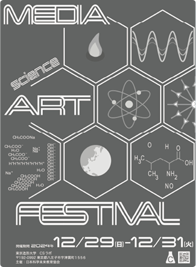

森の思考
「森の中の美術大学を観察したら」というコンセプトから着想を得て、自然の有機的な広がりと、そこから生まれる学生たちの思考の深まりを、複雑に絡み合うグリーンの線画で表現しました。豊かな自然環境に囲まれた大学ならではのアイデンティティを視覚化したグラフィックデザインです。
個人ワーク
「森の中の美術大学を観察したら」というコンセプトから着想を得て、自然の有機的な広がりと、そこから生まれる学生たちの思考の深まりを、複雑に絡み合うグリーンの線画で表現しました。豊かな自然環境に囲まれた大学ならではのアイデンティティを視覚化したグラフィックデザインです。
個人ワーク
学内のクラブ連合委員会からの依頼により制作した。課外活動の活発さや選択肢の多様性を伝えるため、爽やかなブルーを基調に、直感的に伝わるアイコニックな矢印やチェックマークのグラフィックを配置しました。
グループワーク
新入生をサポートする相談窓口「MD相談会」の告知ポスター。大学生活に不安を抱える新入生が気軽に足を運べるよう、温かみのあるパープルやピンクのカラーパレットを採用しました。親しみやすいレイアウトと「優しく迎え入れる」トーン＆マナーを心がけました。
個人ワーク
科学と美術の融合をテーマにした、架空のフェスティバル「Media Art Fes」の告知ポスター。六角形の幾何学的なグリッドをベースに、分子構造や化学式、天体、波形といった多様な科学的モチーフを緻密に落とし込みました。
個人ワーク